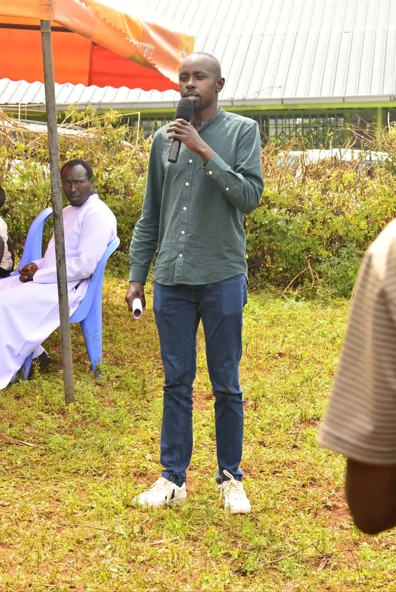

On The Ground


Visionary Leadership. Grassroots Empowerment. Economic Transformation.
As the CEO of Prince Capital Properties, Prince Mutai has spent years building legacies through strategic investment and development. Now, he brings that same executive expertise back home to Ainamoi.
His "Anza Fresh" philosophy isn't just a slogan—it's a commitment to professionalizing constituency management and ensuring the Bottom-Up Economic Agenda truly reaches the common mwananchi.

Leveraging business expertise to create markets for local traders and support the Boda Boda economy.
Standardizing sports facilities and creating digital hubs for Ainamoi's youth to compete globally.
Prioritizing value addition for tea and dairy farmers to ensure better returns on their labor.
A fresh start in leadership where every shilling is accounted for in schools and health facilities.